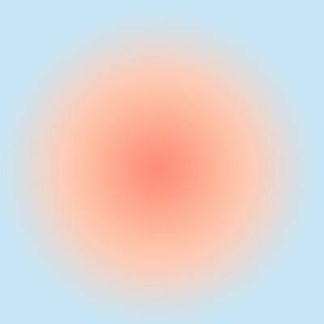

Merhaba!

Merhaba! Ben Eda Eren. Sakarya Üniversitesi Bilgisayar Mühendisliği Bölümü 1. sınıf öğrencisiyim. İstanbul'da yaşıyorum. Edirneliyim. Çocukluğumdan beri resim yapmaktan hoşlanıyorum. Küçükken daha çok manzara resimleriyle ilgilensem de fazla iddialı olmamakla beraber son bir iki senedir hayal gücümü de ekleyerek portremsi çalışmalar yapıyorum. Onun dışında yine bir çocukluk alışkanlığı olarak kitap okuyorum. Okuma alışkanlığımı Rick Riordan'nın Percy Jackson ve Olimposlular serisi ile kazandığımı söyleyebilirim. Bu sebeple bilim kurgu ve fantastik kitapların yeri bende ayrı. Bu sıralar ise daha çok klasik kitapları tercih ediyorum.
Hayatımın her anına müzik de dahil. Dinlemeyi en sevdiğim müzik grubu Bastille. Çoğu grubu dinlemekten zaman içinde sıkılsam da Bastille'i yaklaşık 7 yıldır bıkmadan dinleyip takip ediyorum.
Dizileri filmlere tercih ederim. İzlemeyi en sevdiğim dizi türü sitcomlar. How I Met Your Mother, Friends, Brooklyn 99, Community, Modern Family ve daha nice komedi dizilerini izledim. Film olarak ise yine kitaplarda tercih ettiğim gibi bilim kurgu türünü tercih ediyorum. Komediyi filmlerde izlemeyi sevmiyorum.